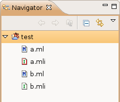

This section only concerns O'Caml Managed Projects. There are no automatically generated files in the other project kinds.
The O'Caml plug-in makes the distinction between files you created manually, and files that were automatically generated by a tool (such as the O'Caml compiler).
The automatically generated files appear with a red outline in the navigator view:

For example, in this screenshot, the "a.mli" file was automatically generated, whereas the other files were created or modified by the user.
You can always delete automatically generated files, they will be re-created by the compiler (immediately if the Build Automatically option is checked in the Project menu).
Caution: if one of the files you created takes the appearance of an automatically generated
file, if you don't want it to be deleted you should immediately uncheck the Build Automatically option
in the Project menu, open the file in an editor, modify it (so that it will be saved) and save it.
If you fail to follow these steps, your file will be deleted the next time the project is recompiled.